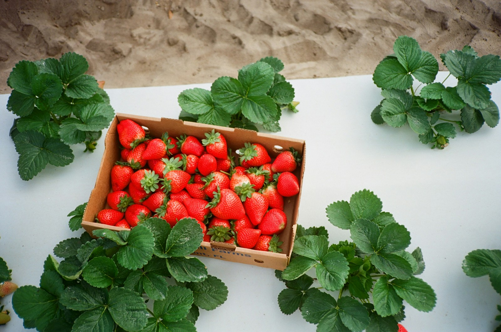
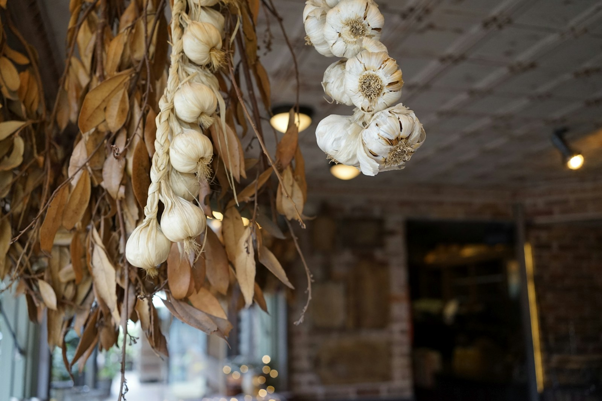
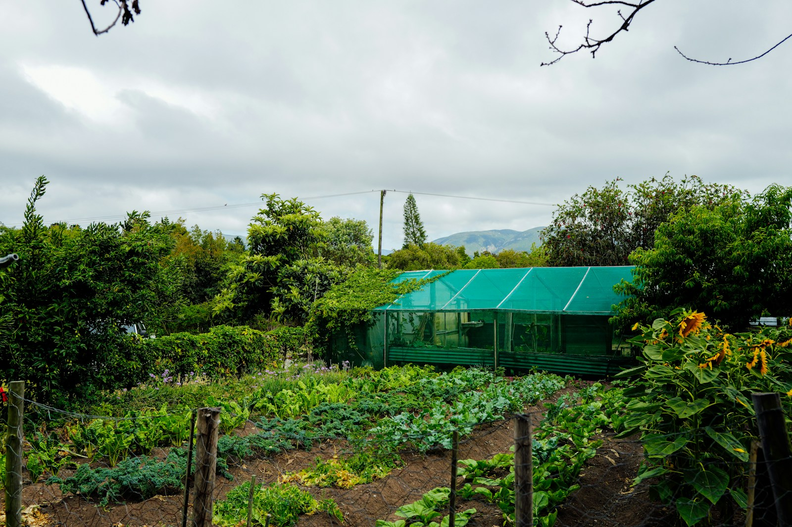
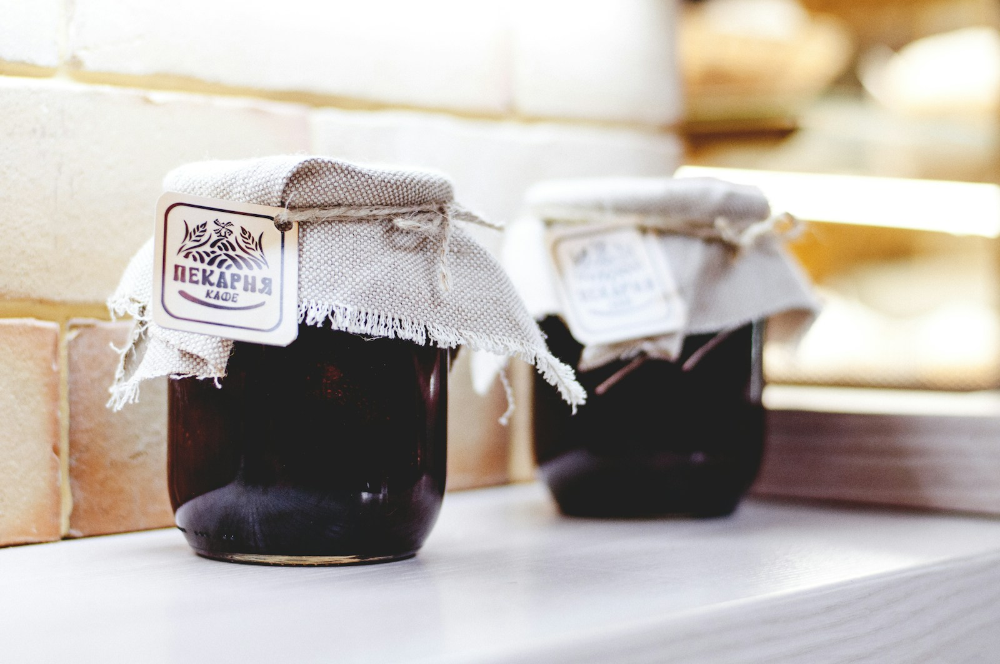

POMLAD
POMLAD01 / Z VRTA NA MIZO
Šparglji
Nežen začetek sezone. Šparglji se lepo podajo v rižoto, testenine ali na ponev, kjer pride njihov okus najbolj do izraza.
April–junijPovprašaj
Prebrskajte izbor svežih pridelkov in predelanih dobrot. Ponudba na tej strani je predstavitvena; za dejanske zaloge in cene se obrnite na posestvo.
Prikazanih izdelkov: 5
POMLADNežen začetek sezone. Šparglji se lepo podajo v rižoto, testenine ali na ponev, kjer pride njihov okus najbolj do izraza.

POZNA POMLAD · POLETJEZa skledo svežega sadja, domačo sladico ali sladek prigrizek. Zrelost in razpoložljivost jagod narekujeta vreme in sezona.

POLETJE · JESENOsnova preprostih domačih jedi. Za juhe, omake in pečeno zelenjavo, pri katerih šteje dober okus osnovnih sestavin.

V RITMU VRTAPonudba se skozi leto spreminja. Pred obiskom preverite, kaj je trenutno na voljo, in jedilnik prilagodite sezoni.

IZ SHRAMBEVložnine in namazi povežejo okus pridelkov z vsakdanjo kuhinjo. Za točen izbor, sestavine in velikost pakiranja povprašajte posestvo.
Pri povpraševanju navedite želeni pridelek, okvirno količino in termin. Točen izbor izdelkov, sestavine, alergene, pakiranje in ceno je treba potrditi pri posestvu.
Poglejte ponudbo in nam povejte, kateri pridelki vas zanimajo.